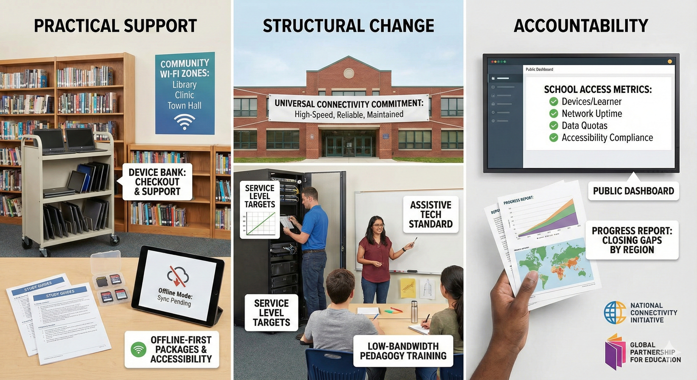
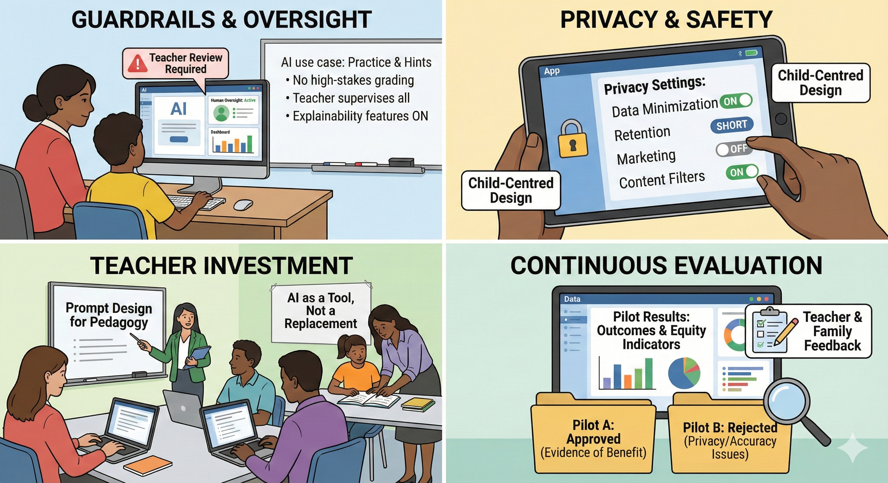
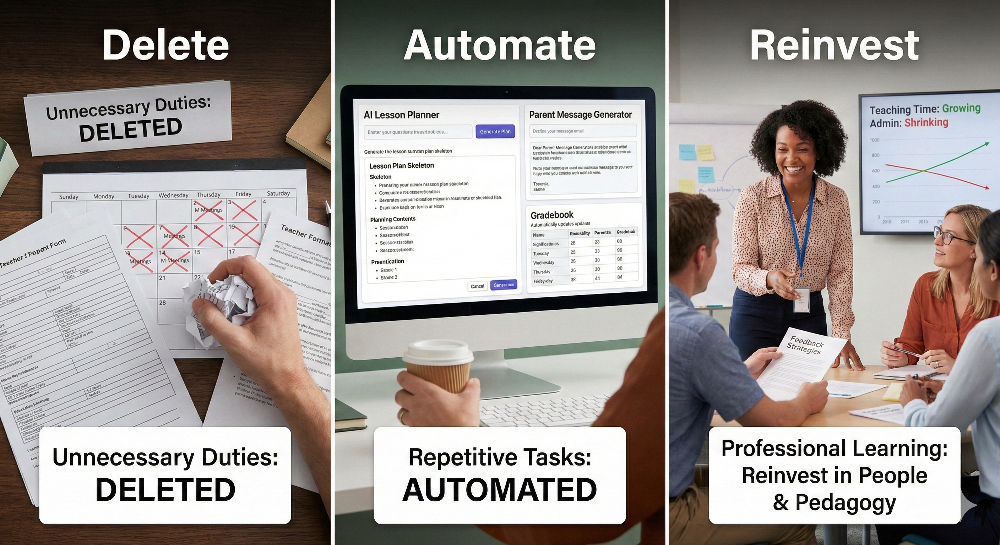
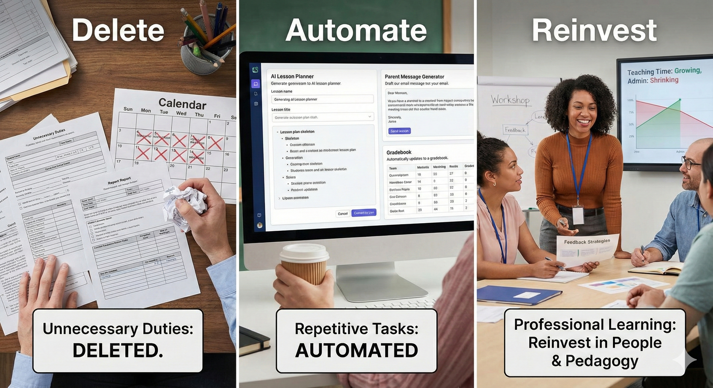
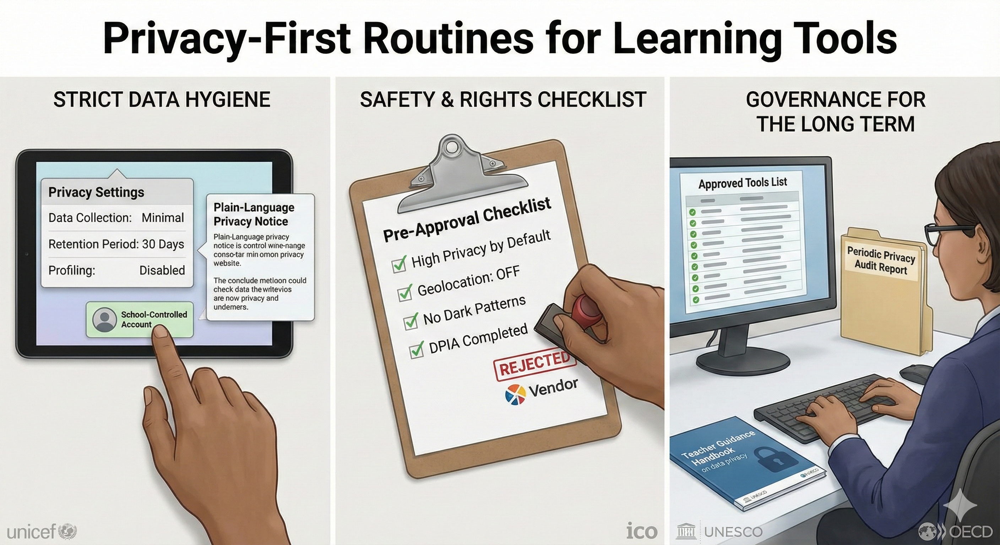

Solutions that close the gap
Practical moves, structural reforms, and accountability for every case.
Capture immediate fixes, structural reforms, and accountability practices for each story. Outline the next steps, partners, and safeguards so AI strengthens learning instead of replacing it.

Case 1
Layer practical support with structural change
The first bundle of solutions is practical and immediate. Run school device banks with clear checkout policies. Partner with telecoms to zero rate core learning portals. Stand up community Wi-Fi in libraries, clinics, and town halls. Publish offline first packages such as printable study guides, SD cards with content, and LMS modes that sync when a signal returns. Build in accessibility from the start so students who need captions, screen readers, or high contrast modes are not left behind (UNICEF UK, 2021; GSMA Intelligence, 2024).
The second bundle is structural. Commit to universal school connectivity with service level targets, transparent funding for maintenance, and rapid repair agreements. Include assistive technology as standard in procurement. Budget for replacement cycles. Train teachers in low bandwidth pedagogy and feedback routines that do not depend on constant video (World Bank, 2025; UNICEF UK, 2021).
Accountability keeps the promise real. Publish school level access metrics such as devices per learner, average network uptime, monthly data quotas, and accessibility compliance. Set targets by region, report progress, and tie grants to closing specific gaps. Leverage national and international initiatives that map and connect schools to accelerate progress and to keep data visible to communities and partners (UNICEF Office of Innovation & ITU, n.d.; International Telecommunication Union, n.d.).

Case 2
Guardrails, training, and continuous review
Start with a clear use case and guardrails. Define what the AI tutor will do this term, how success will be measured, and how teachers will supervise. Require explainability features such as visible steps, citation prompts, and teacher dashboards. Set rules that AI may not grade high-stakes work, decide placement, or write summative feedback without teacher review. Make human oversight and alignment to learning objectives non-negotiable (U.S. Department of Education, 2023).
Design for privacy, safety, and age appropriateness. Use data minimisation, short retention, and school-controlled accounts. Disable data sales and marketing uses. Turn on content filters, cite-your-sources prompts, and guardrails against harmful or biased outputs. Follow child-centred requirements and age-appropriate design standards so minors’ rights come first in any deployment (UNICEF, 2021; UK Information Commissioner’s Office, 2020).
Invest in teachers, not only tools. Provide professional development on prompt design for pedagogy, diagnosing AI mistakes, and coaching students to explain reasoning. Establish classroom routines where AI is a draft or hint generator and the student must still show process and reflect on errors. Pair this with offline options so adoption does not exclude students with limited connectivity (UNESCO, 2023; OECD, 2023).
Evaluate continuously. Run small pilots with comparison groups, track student outcomes and equity indicators, and survey teachers and families. Reject tools that fail accuracy, privacy, or accessibility checks, even if they are popular. Treat procurement as a living process with renewal contingent on evidence of benefit and compliance (U.S. Department of Education, 2023; OECD, 2023).

Case 3
Align tasks, calibrate scoring, support faculty
Start with alignment and transparency. Select the outcomes that matter, design an authentic task that requires students to demonstrate them in a realistic scenario, and publish the rubric with annotated exemplars so effort stays targeted (Darling-Hammond, 2013).
Build scoring quality through shared tools and practice. Use programme rubrics such as VALUE as a base, customise criteria, and run norming sessions where faculty calibrate on sample work. Provide formative checkpoints so assessment supports learning, not only the grade (AAC&U, n.d.; Guha et al., 2018).
Plan for scale, integrity, and inclusion. Choose manageable artefacts paired with oral checks or process logs to uphold academic integrity in the era of generative AI. Offer accessible formats and invest in teacher assessment literacy so workloads remain sustainable and benefits reach all learners (UNESCO, 2023).

Case 4
Delete, automate, and reinvest in people
Start with deletion before automation. Map a week of teacher tasks and remove duplicative reporting, unnecessary meetings, and manual data handoffs. Standardise simple workflows such as attendance, low-stakes grading, and parent messages. Policy frameworks that regulate non-instructional duties and simplify compliance protect teaching time (OECD, 2021a; OECD, 2021b).
Then automate the repetitive parts with guardrails. Use tools to batch-build lesson skeletons, generate practice items, pre-write report card stems, and transcribe conferences, while keeping teachers in charge of judgement. Evidence shows existing technology can reclaim hours when goals are explicit and oversight is routine (Bryant et al., 2020; UNESCO, 2023).
Invest in people and routines. Provide professional learning on workload-aware lesson planning, efficient feedback methods, and critical evaluation of AI outputs. Create roles for instructional coaches and data support, and track time-use targets so communities can see whether admin is shrinking and teaching time is growing (OECD, 2025; RAND, 2024).

Case 5
Privacy-first routines for learning tools
Start with strict data hygiene. Collect only what is necessary for learning, set short retention windows, disable profiling by default, and use school-controlled accounts with role-based access. Publish a plain-language privacy notice that lists what data are collected, for what purpose, for how long, and with whom they are shared. These steps align with UNICEF’s child-centred requirements for digital systems (UNICEF Innocenti, 2021).
Adopt a safety and rights checklist before approving any tool. Run an Age-Appropriate Design Code style review: high privacy by default, geolocation off unless essential, no dark patterns, and a documented data protection impact assessment. If a vendor cannot meet that bar, do not deploy it (Information Commissioner’s Office, 2020).
Build governance for the long term. Maintain a centrally vetted list of approved tools, run periodic audits, and give teachers clear guidance on what is allowed. Tie contracts to compliance with UNESCO’s privacy recommendations and align system policy with OECD guidance on data governance so that transparency and accountability are routine rather than exceptional (UNESCO, 2022; OECD, 2023).